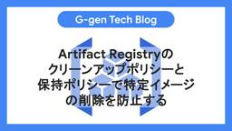
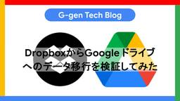
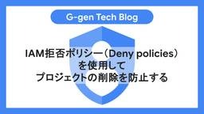

G-gen Tech Blog
https://blog.g-gen.co.jp/
Google Cloudの情報発信を行う技術ブログ
フィード

Artifact Registryのクリーンアップポリシーと保持ポリシーで特定イメージの削除を防止する
G-gen Tech Blog
G-gen の佐々木です。当記事では、Artifact Registry で不要になったイメージを自動削除するクリーンアップポリシーについて、特定のイメージが削除されないように条件付きの保持ポリシーを組み合わせて使う方法を解説します。 クリーンアップポリシーとは 機能の概要 保持ポリシーを使用するケース 保持ポリシーで設定可能な条件 当記事のユースケース 設定方法 保持対象イメージへのタグの付与 ドライラン ポリシーの適用 クリーンアップポリシーとは 機能の概要 Artifact Registry のクリーンアップポリシーは、リポジトリ内のイメージを条件に基づいて自動的に削除する機能です。 開…
2日前

DropboxからGoogleドライブへのデータ移行を検証してみた
G-gen Tech Blog
G-gen の三浦です。当記事では、Google が提供する標準機能を使って、Dropbox から Google ドライブへのデータを移行した検証の結果を紹介します。 概要 Dropbox からのデータ移行とは 前提条件 制約 検証概要 検証環境 検証の流れ 設定手順 [Dropbox] 移行元のチームフォルダ Path の確認（チームフォルダを移行する場合のみ） [Google Workspace] 移行先の共有ドライブ ID の確認（チームフォルダを移行する場合のみ） [Google Workspace] 移行用の CSV の準備 [Google Workspace] データ移行の実施 個…
4日前

IAM拒否ポリシー（Deny policies）を使用してプロジェクトの削除を防止する 1
1
G-gen Tech Blog
G-gen の佐々木です。当記事では、IAM 拒否ポリシーを使用して Google Cloud プロジェクトの削除を防止する方法を解説します。 プロジェクト削除の防止方法 IAM 拒否ポリシー（Deny Policy） リーエン（Lien） 拒否ポリシーとリーエンの比較 拒否ポリシーの設定手順 コンソールの場合 CLI の場合 使用する設定ファイル 組織レベルの拒否ポリシー フォルダレベルの拒否ポリシー プロジェクトレベルの拒否ポリシー Terraform の場合 拒否ポリシーの削除 プロジェクト削除の防止方法 IAM 拒否ポリシー（Deny Policy） 当記事で使用する IAM 拒否ポリ…
6日前

2段階認証が原因でGoogleアカウントにログインできない場合の解決策
G-gen Tech Blog
Google アカウントでは、2段階認証として登録した携帯電話の番号が使えなくなったなどの理由で、アカウントからロックアウトされてしまう場合があります。当記事では、アカウントにログインできなくなった場合の解決策と復旧手順を解説します。 アカウントからのロックアウト 別の方法を試す 管理者による対応（Google Workspace の場合） アカウント復旧プロセス（個人アカウントの場合） アカウントからのロックアウト Google アカウントの2段階認証（2要素認証）では、パスワードの入力後に、登録した電話番号への SMS 送信やワンタイムパスワード、またはモバイルアプリへの通知などによって本…
9日前
共有ドライブの外部共有を制限する3つの方法
G-gen Tech Blog
G-gen の堂原です。当記事では、Google Workspace の共有ドライブにおいて、ファイルやフォルダが組織外へ共有されてしまうことを防ぐ方法を紹介します。「アクセスレベルによる制限」、「共有ドライブレベルでの制限」そして「管理コンソールを用いた組織部門レベルでの制限」の3手法を解説します。 はじめに アクセスレベルによる制限 共有ドライブレベルでの制限 組織部門レベルでの制限 はじめに 共有ドライブは Google ドライブの機能であり、チームでファイルを保存、検索、アクセスすることができます。ファイルごと、またはフォルダごとん、組織内部のメンバーはもちろん、組織外部のメンバーに対…
11日前
異なるGoogleカレンダー予定で同じGoogle Meet会議URLを使う
G-gen Tech Blog
G-gen の堂原です。当記事では、Google カレンダーの異なる予定で、同じ Google Meet の会議 URL を使用する方法について解説します。 はじめに 手順1 : 既存の会議コードを取得 手順2 : 複製先予定にビデオ会議を追加 手順3 : 複製先のビデオ会議を既存の会議コードで上書き はじめに Google カレンダーでは、予定に Google Meet のビデオ会議を紐づけることができます。 また、Google カレンダーでは予定を複製することができます。例えば、定例会議など同じメンバーでの会議が週2回で行われる場合、1つ目の予定を複製して2つ目の予定を作るなどといった使い…
13日前
Cloud Runデプロイ時の「Cloud Run does not support image ~ must support amd64/linux.」エラー
G-gen Tech Blog
G-gen の佐々木です。当記事では、MacOS が搭載する Apple Silicon のような ARM64 ベースの環境でビルドしたコンテナイメージを Cloud Run にデプロイしたときに発生するエラーについて解説します。 事象 原因 対処法 docker コマンドを使用する方法 Cloud Build を使用する方法 事象 以下のように、ARM64 ベースの環境で docker build コマンドを使用して、アプリケーションをビルドします。 # アーキテクチャ確認 $ uname -m arm64 # コンテナイメージをビルド・プッシュ $ docker build -t <Art…
16日前
実践Vertex AI Custom Training:カスタムコンテナによるLightGBM学習とモデル解釈
G-gen Tech Blog
G-gen の片岩です。当記事では Vertex AI Custom Training において カスタムコンテナ を使用し、標準では提供されていない LightGBM モデルの学習から 寄与度（SHAP）の出力 まで実行する方法を紹介します。 はじめに ビルド済みコンテナとカスタムコンテナの使い分け カスタムコンテナの利点 構成図 初期設定 データの準備と分割 カスタムコンテナの準備 ディレクトリとリポジトリの準備 学習スクリプトの作成 Dockerfile の作成 コンテナのビルドとプッシュ 学習ジョブの実行 推論と評価指標の確認 分析レポートの解釈 はじめに ビルド済みコンテナとカスタム…
18日前
Vertex AI Custom Training入門
G-gen Tech Blog
G-gen の片岩です。当記事では Vertex AI Custom Training を使用して、機械学習モデルのトレーニングから推論まで実行する方法を紹介します。Vertex AI Custom Training を使うことで、クラウド上のフルマネージド環境で機械学習モデルをトレーニングできます。 はじめに 機械学習モデルのトレーニング手法 Vertex AI Custom Training とは 構成図 初期設定 データの準備と分割 学習スクリプトの作成 学習ジョブの実行 推論の実行 推論結果の確認 はじめに 機械学習モデルのトレーニング手法 Google Cloud のマネージドサービ…
19日前
Google Workspace CLIとGemini CLIを使い自然言語でGoogle Workspaceを管理する
G-gen Tech Blog
G-gen の三浦です。当記事では、Google Workspace CLI と、Google が提供する生成 AI CLI ツールである Gemini CLI を組み合わせて、Google Workspace の管理操作を自然言語で行いました。 概要 Gemini CLI とは Google Workspace CLI とは 検証の流れ Google Workspace CLI のセットアップ インストールと初期設定 OAuth 同意設定（Step A） OAuth クライアント作成（Step B） セットアップ完了 CLI の認証 Gemini CLI の設定 動作検証 ユーザーおよびグル…
20日前
BigQueryのデータマスキング機能を解説
G-gen Tech Blog
G-gen のminです。BigQuery のデータマスキング機能を解説します。データマスキングを使うと、機密情報をマスキングして特定できない形でクエリ結果に表示させることができ、分析を阻害せずにデータを保護することができます。 データマスキングとは 概要 列レベルのアクセス制御との違い 仕組み 権限とロール マスキングルールの種類 定義済みルール カスタムマスキングルーチン ルールの優先順位 設定手順 分類とポリシータグの作成 データポリシーの作成 テーブル列へのタグ付け データポリシーの列への直接付与 制約と注意点 互換性のない機能 SQL で利用する際の注意点 コストへの影響 セキュリテ…
23日前
Network Connectivity Centerで異なるプロジェクトのVPC同士を接続する
G-gen Tech Blog
G-gen の助田です。当記事では、Network Connectivity Center を使い、異なるプロジェクトの VPC ネットワーク同士を接続する手順を解説します。 はじめに Network Connectivity Center とは 検証シナリオ ハイブリッドスポーク使用時の注意点 設定手順 事前準備 プロジェクト A: NCC ハブの作成とスポークの接続 プロジェクト B: スポークの作成と接続リクエストの送信 プロジェクト A: 接続リクエストの承認 疎通確認 ルートテーブルの確認 PING による疎通テスト はじめに Network Connectivity Center …
25日前
2026年2月のイチオシGoogle Cloud・Google Workspaceアップデート
G-gen Tech Blog
G-gen の杉村です。2026年2月に発表された、Google Cloud や Google Workspace のイチオシアップデートをまとめてご紹介します。記載は全て、記事公開当時のものですのでご留意ください。 はじめに Google Cloud のアップデート BigQuery でパラメータ化クエリがコンソールから実行できるように Spanner で SQL からリモート関数を実行できるように（Preview） Google Cloud remote MCP Server が Resource Manager に対応（Preview） Gemini Enterprise と Noteb…
1ヶ月前
Google Meetの「会議へのアクセス」設定について解説
G-gen Tech Blog
G-gen の堂原です。当記事では、Google Workspace の Google Meet で、誰が会議に参加できるかを定義する会議へのアクセス設定について、仕様を解説します。会議へのアクセス設定は「オープン」「信頼済み」「制限付き」から選択できますが、その結果はユーザーの属性や会議にアクセスした時間によって異なります。 はじめに 会議へのアクセスの設定値 タイミングによる挙動の違い 概要 開催 15 分前～開催中 開催 16 分以上前 デフォルト設定について はじめに Google Workspace の Google Meet では、会議の主催者が「誰が会議にリクエスト無しで入室でき…
1ヶ月前
ADKエージェントのWeb UIをCloud Runで公開する方法
G-gen Tech Blog
G-gen の堂原です。当記事では、Agent Development Kit（ADK）を使用して開発した AI エージェントの開発者用 Web UI を、Cloud Run へデプロイする方法を紹介します。 はじめに Agent Development Kit 当記事について ディレクトリ構成とソースコード Cloud Run へのデプロイ デプロイコマンド 実行例 留意事項 Gemini モデルとリージョン セッションの整合性 はじめに Agent Development Kit Agent Development Kit（ADK）は、Google によって開発された AI エージェント構…
1ヶ月前
Google Workspaceのストレージプールの仕組み
G-gen Tech Blog
Google Workspace において Google ドライブなどのストレージ容量上限を規定するための仕組みである、ストレージプールの仕組みについて解説します。 概要 ストレージプールとは 対象となるデータ エディションごとの上限 ストレージ容量の管理 使用状況の確認 ストレージ制限の設定 容量が不足した場合の挙動 ストレージプールを増やす方法 ライセンスの追加購入 上位エディションへのアップグレード 追加ストレージの購入 概要 ストレージプールとは ストレージプールとは、組織内のすべてのユーザーが共有で使用できる、合算されたストレージ容量の仕組みです。Google Workspace の…
1ヶ月前
Gmailで特定のアドレス・ドメイン以外との送受信を制限する
G-gen Tech Blog
G-gen の堂原です。当記事では、Google Workspace の Gmail で、メールの送受信を特定のメールアドレスやドメインとの間にだけ許可し、それ以外は制限する方法について解説します。 はじめに 当記事について 仕様 手順1 : アドレスリスト作成 手順1-1 : アドレスリストの管理画面への遷移 手順1-2 : アドレスリストの作成 手順2 : 「配信を制限」の設定 手順2-1 : コンプライアンス画面への遷移 手順2-2 : 「配信を制限」の設定 はじめに 当記事について E メールの利用に際して、組織内のユーザーが外部の不特定多数とメールを送受信することを防ぎたいケースがあ…
1ヶ月前
LookerでBigQueryに接続してLookML作成から可視化までを行う手順を解説
G-gen Tech Blog
G-gen の菊池です。当記事では、Looker で BigQuery のデータを可視化するための一連のフローを、スクリーンショット付きで解説します。BigQuery との接続から、LookML の自動生成と調整、Explore での可視化などを説明します。 はじめに 当記事について Looker、ビュー、Explore、モデル 構成図 BigQuery 側の準備 デモ用データセットの作成 サンプルデータの投入 接続用サービスアカウント（SA） の作成と権限付与 Looker の接続設定 BigQuery への接続（Connection）の作成 接続テストと設定の保存 LookML プロジェク…
1ヶ月前
GASアドオンでスクリプトプロパティ読み取り時にPERMISSION_DENIEDエラーが発生する場合の対処法
G-gen Tech Blog
G-gen の min です。Google Apps Script（以下、GAS）で開発したアドオンをユーザーが実行した際、スクリプトプロパティの読み取り時に PERMISSION_DENIED エラーが発生しました。本記事では、この事象の原因と対処法を解説します。 事象 原因 対処法 定数としてコード内に記述する ユーザーにスクリプトファイルへの閲覧権限を付与する 事象 GAS で作成した機能を Google Workspace アドオンとして配布し、利用者がそのアドオンのメニューを実行した際、以下のようなエラーログが Google Cloud の Cloud Logging に記録され、処…
1ヶ月前
Google SecOps MCP serverを使ってみた
G-gen Tech Blog
G-gen の三浦です。当記事では、Gemini CLI から Google SecOps MCP server を使用して、ケース確認からログ調査までを自然言語で要約した検証結果を紹介します。 前提知識 Google SecOps とは Gemini CLI とは 概要 Google SecOps MCP server とは 使用可能なツール 注意点 検証手順 事前準備 IAM 権限の付与と MCP サーバーの有効化 Customer ID の確認 Gemini CLI の設定 ケース運用 未対応のケース一覧の取得 高優先度ケースの抽出と要約 関連アラートの確認と影響範囲の確認 検索・調査 …
1ヶ月前
Developer Knowledge APIをMCPサーバー経由で使ってみた
G-gen Tech Blog
G-gen の高宮です。Google 公式の技術ドキュメントを検索するための Developer Knowledge API を、Gemini CLI から MCP サーバー経由で使用した検証結果を紹介します。 はじめに Developer Knowledge API とは MCP サーバーで使用可能なツール 注意事項 事前準備 Google Cloud の設定 Gemini CLI の設定 search_documents での検索 質問の投入 検索と回答の流れ get_document での検索 質問の投入 検索と回答の流れ AI 開発におけるドキュメント参照 はじめに Developer…
1ヶ月前
Google Antigravityでバイブコーディングしてみた
G-gen Tech Blog
G-gen の三浦です。当記事では Google Antigravity を使用し、バイブコーディングで目標管理アプリを開発する手順と、Browser Agent によるデバッグの流れを紹介します。 概要 Google Antigravity とは リリースステージ 使用可能なモデル データの保護 検証手順 検証 インストール 初期設定 日本語化とルール設定 自然言語による開発 Browser Agent によるデバッグ 概要 Google Antigravity とは Google Antigravity は、AI を使用して開発作業ができる IDE（統合開発環境）です。Google Ant…
2ヶ月前
Google SecOpsとAWSのログ連携をキーレス認証で実現する
G-gen Tech Blog
G-gen の武井です。当記事では、Google が提供する SIEM/SOAR 製品である Google SecOps と AWS のログ連携をキーレス認証で実現する方法について解説します。 前提知識 Google SecOps データフィード キーレス認証 過去記事との相違 AWS の設定 カスタム IAM ロール カスタム IAM ロール（信頼ポリシー） ID プロバイダー データフィードの設定 動作確認 関連記事 前提知識 Google SecOps Google Security Operations（以下 Google SecOps、旧称 Chronicle）は、Google Cl…
2ヶ月前
Google SecOpsにAWS CloudTrailログを取り込む
G-gen Tech Blog
G-gen の武井です。当記事では、Google が提供する SIEM/SOAR 製品である Google SecOps に、AWS CloudTrail ログを取り込む方法について解説します。 はじめに Google SecOps とは データフィードとは 設定の流れ AWS の設定 S3 バケット SQS（Simple Queue Service） SQS アクセスポリシー S3 イベント通知 CloudTrail IAM データフィードの設定 動作確認 関連記事 はじめに Google SecOps とは Google Security Operations（以下 Google SecO…
2ヶ月前
2026年1月のイチオシGoogle Cloud・Google Workspaceアップデート
G-gen Tech Blog
G-gen の杉村です。2026年1月に発表された、Google Cloud や Google Workspace のイチオシアップデートをまとめてご紹介します。記載は全て、記事公開当時のものですのでご留意ください。 はじめに Google Cloud のアップデート LOAD DATA/CREATE EXTERNAL TABLE のフォーマット指定オプションが GA Cloud Run functions で Direct VPC egress が使用可能に（Preview） Gemini CLI 利用状況を Cloud Monitoring にエクスポート Gemini Enterpris…
2ヶ月前
BigQueryのConversational Analytics（対話型分析）を徹底解説
G-gen Tech Blog
G-gen の杉村です。BigQuery には Conversational Analytics（対話型分析）機能が備わっており、データに関する質問を生成 AI に対してチャット形式で投げかけることができます。この機能を使うことで、SQL の知識がなくても、自然言語でデータをクエリすることができます。 概要 Conversational Analytics とは 使用イメージ 料金 他の手法との比較 自然言語による BigQuery へのクエリ Looker Studio Pro の Conversational Analytics との違い データエージェント データエージェントとは 設定項…
2ヶ月前
Cloud Storageのロケーションタイプに起因する料金スパイクについて
G-gen Tech Blog
Google Cloud のオブジェクトストレージサービスである Cloud Storage において、見落とされがちなのがレプリケーション料金です。当記事では、ロケーションタイプの選択による料金スパイクの事象と、リージョン間レプリケーション料金の仕組み、ロケーションタイプを決めるポイントについて解説します。 事象 原因 ロケーションタイプ ロケーションタイプと可用性 リージョン間レプリケーション料金とは 料金の算出方法 ターボレプリケーション ロケーションタイプ決定の判断基準 可用性と堅牢性 コストとレイテンシの最適化 事象 Cloud Storage バケットを新規に作成し、大容量（全体で…
2ヶ月前
BigQueryデータキャンバスを使いこなすためのプロンプトエンジニアリング
G-gen Tech Blog
G-gen の min です。BigQuery に統合された AI アシスタント機能である BigQuery データキャンバス について、より実践的な活用方法と、技術的な制約事項について解説します。 はじめに BigQuery データキャンバスとは Conversational Analytics API とは 効果的な質問のテクニック コンテキストを具体的に提示する 複雑な分析は複数のステップに分割する データ条件と集計方法を明示する フォローアップ質問で深掘りする 出力形式を指定するキーワード サンプルデータによる検証 データの準備 実行例 制限事項 概要 可視化の制限 データ処理の制限 …
2ヶ月前
Nano Banana Pro（Gemini 3 Pro Image）を徹底解説
G-gen Tech Blog
G-gen の川村です。この記事では、Google の画像生成 AI モデルである Gemini 3 Pro Image、通称 Nano Banana Pro について紹介します。 はじめに 当記事について Nano Banana Pro とは Nano Banana と Nano Banana Pro Nano Banana Pro の利用 概要 Google Workspace での利用 API 経由での利用 特徴 解像度と画質 日本語テキスト描写 思考モード Google 検索との連携 利用手順 Gemini アプリ NotebookLM その他 プロンプトのコツ 概要 被写体のシーン変…
2ヶ月前
Google Cloudのデータサイエンスエージェントを解説
G-gen Tech Blog
G-gen の佐々木です。当記事では、Google Cloud が提供するデータサイエンスエージェント（Data Science Agent）について解説します。データサイエンスエージェントは、Colab Enterprise ノートブック上で、AI エージェントがデータクレンジングや分析などのタスクを自動的に行う機能です。 概要 データサイエンスエージェントとは 注意点 Google Colab のデータサイエンスエージェント 制限事項 料金 開始方法 IAM ロールの設定 Gemini in Colab Enterprise の起動 読み取り可能なデータソース CSV ファイル BigQu…
2ヶ月前